How to measure whether an AI is actually good, in numbers you can defend.
No AI or machine-learning background needed. If you can read a recipe, you are ready.
A teacher says, "I think it grades better than the old one." That is a feeling. The principal cannot spend money on a feeling, and nobody can tell what "better" even means.
That simple move is the whole idea. Everything in this deck is a careful, honest version of it.
Feeling to number. That translation is job number one.
A vibe. You cannot fund it, ship it, or win an argument with it. Two people can look at the same demo and disagree forever.
A measurement. Comparable across versions, repeatable by anyone, and honest that it is not perfectly certain.
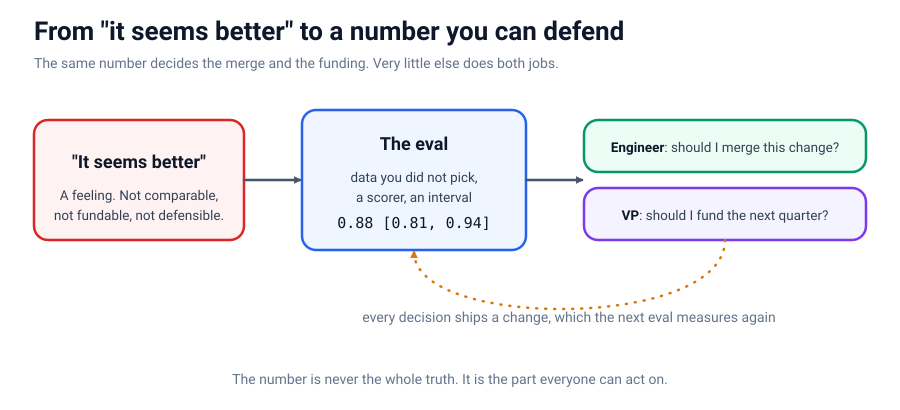
Look at the picture on the last slide. A vague claim goes in on the left. The eval in the middle turns it into a score with a range. That single score then serves two very different people:
"Should I merge this change into the product?"
"Should I fund this project next quarter?"
The number is never the whole truth. It is the part everyone can act on.
Each part builds directly on the one before it.
Answer keys, a tiny harness, simple scorers, and a test of the grader itself.
Where the "correct answers" come from
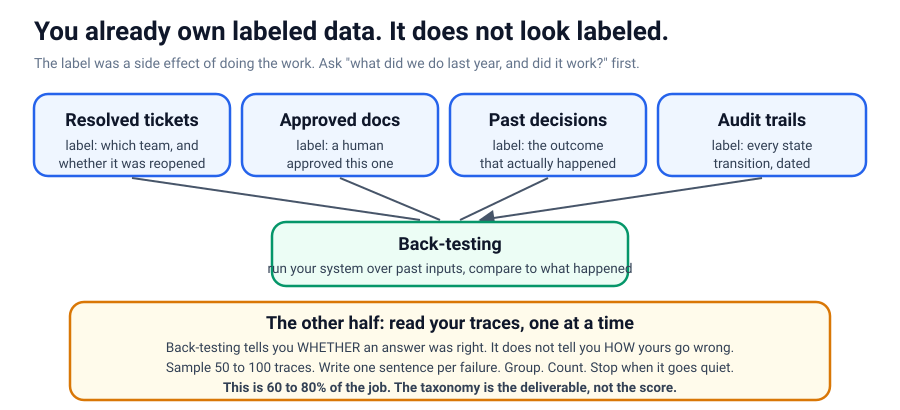
To grade anything you need ground truth: correct answers decided by someone other than the AI. People say "but we have no labeled data." That is almost always false.
Before you can grade, you have to learn how your AI goes wrong. The only way is to read real runs and write down what broke. The full record of one run is called a trace.
1. Grab 50 to 100 real traces. 2. Write one plain sentence per mistake. 3. Group the sentences. 4. Count and sort. 5. Stop when nothing new shows up.
60 to 80% of an expert's eval time is spent here, reading, not writing code.
The whole "harness" is 3 functions and a loop
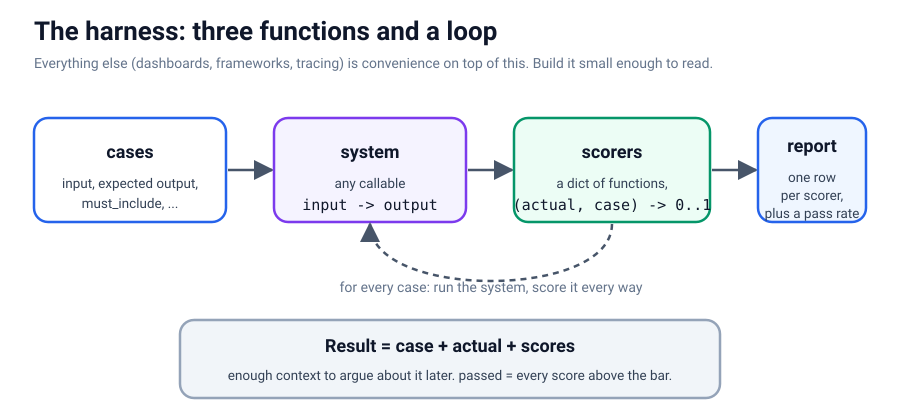
A harness is the machine that does the grading. Every fancy dashboard you have seen is just decoration on top of these three simple pieces:
One graded answer: the question, what the AI said, and its scores. One row of a gradebook.
The loop. Walk every question, run the AI once, hand its answer to every scorer.
Add it up: the average per scorer, plus the overall pass rate.
@dataclass
class Result:
case: dict; actual: str; scores: dict
@property
def passed(self): # passes only if EVERY scorer clears the bar
return all(v >= 0.5 for v in self.scores.values())
def run_eval(cases, system, scorers):
return [Result(c, system(c["input"]),
{name: score(system(c["input"]), c)
for name, score in scorers.items()})
for c in cases]"system" is any input to output function. That looseness is what lets it grade anything.
Start with scorers that need no AI at all
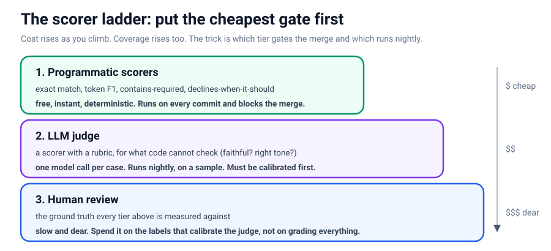
A scorer is just a small function: it reads one answer and returns a number from 0 (wrong) to 1 (perfect). The plain-code ones are free, instant, and never surprise you. They catch more than people expect.
Must match perfectly. For IDs, categories, routing, where "close" is still wrong.
How many words match. Forgives phrasing, good for free text.
Did the answer cite the policy number? Quietly the most useful check.
Did it say "I don't know" when it should have? A system that never refuses will confidently make things up.
Same 0-to-1 scale everywhere, so scores mix and average cleanly.
Test the machine before you trust it
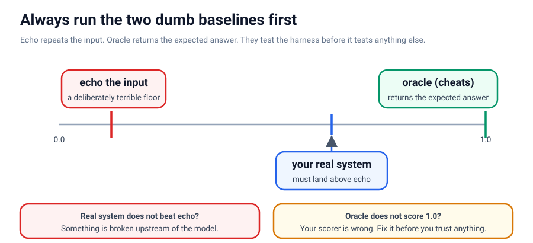
Before trusting the grader on a real system, feed it two baselines whose scores you already know. If the numbers come out wrong, the bug is in your grader.
Just repeats the question back. Should score near the bottom. If your real AI cannot beat echo, something upstream is broken.
Cheats by handing back the correct answer. Should score a perfect 1.0.
Your scorers only check what you thought of in advance. Users hit problems you never imagined, so you ask them. But a lonely thumbs-down tells you something broke, not what.
if not helpful and not reason.strip():
return "Please say what was wrong. That part is the useful bit."Grade what code cannot, then prove whether the judge can be trusted.
Some questions have no substring to search for. "Is this summary faithful to the article?" "Is this tone right for a worried customer?" Judging those takes reading and understanding, so we ask another AI to do it. That AI is an LLM judge, and its grading instructions are its rubric.
Building the judge. Write a prompt asking it to score something and reply with a JSON decision.
Deciding whether to believe that number. Almost everyone skips this. We do not.
Can it tell obviously-bad from obviously-good at all? The low bar. If it cannot even do this, nothing built on it is worth reading.
Does it grade the way a real human would? The high bar, and the one the number you report actually depends on.
Check the judge against human grades
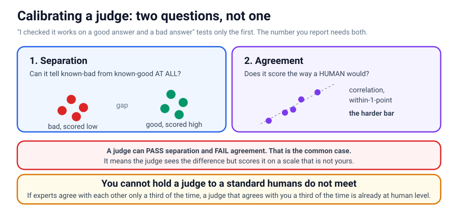
To calibrate is to compare the judge's grades to human grades and measure how well they line up. This is the step that turns a defensible eval into a decorative one, and it gets skipped because it needs human grades to compare against, which most teams never collected.
Human agreement, measured against pure guessing
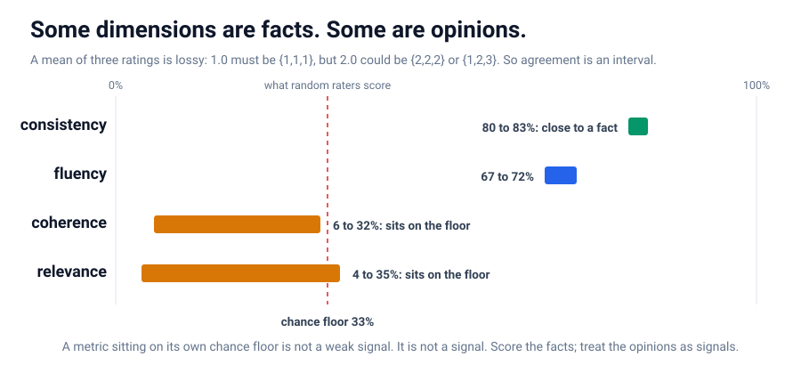
Even the three human experts could not agree on everything. Compared to the 33% you would get from random guessing:
consistency 80%+ Experts almost always agree. Close to a fact: either the summary invents something or it does not.
fluency ~70% A real, usable signal.
coherence ~32% Right at the guessing floor. An opinion.
relevance ~35% Also on the floor. Not a signal.
What our judge actually scored
Avg 1.67 on known-bad, 3.00 on known-good. A gap of 1.33. It is tracking something real.
Correlates ~0.64, within 1 point 75% of the time.
Make rare failures on purpose, and put an error bar on every score.
Make the failures your data almost never has
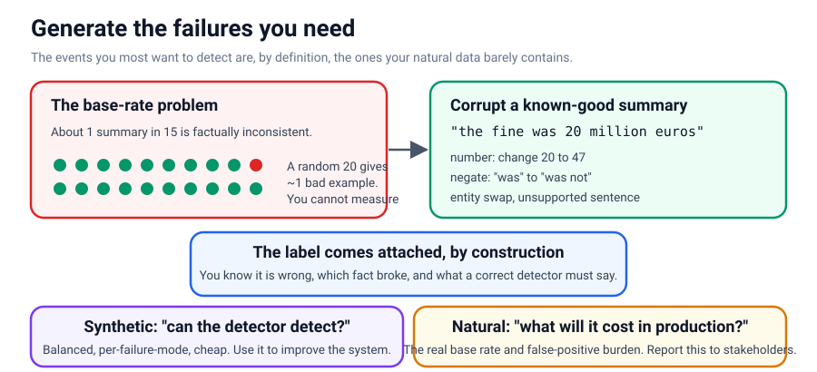
To test whether your AI catches mistakes, you need examples of mistakes. But a good AI barely makes any. Only about 1 in 15 summaries here is broken, so a random handful teaches you nothing.
"Can the detector even detect?" Balanced, cheap, and broken down by failure type so you see exactly which kinds slip through.
"What will this cost in production?" The real, lopsided mix, which is what tells you the true false-alarm rate.
Improve the system with synthetic data. Report to stakeholders with natural data.
The same true gain, invisible when the test is small
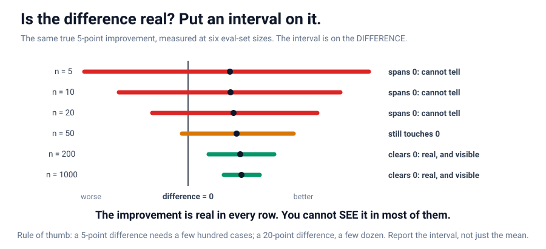
Someone announces "it went from 0.83 to 0.88, a five-point win!" If the test set is small, that could easily be luck. A confidence interval is the honest error bar: how much would the score wobble if you had tested on a slightly different set?
5-point gap needs a few hundred cases to see
20-point gap shows up with a few dozen
Report the range, not just the mean. Chasing single points on a small set is measuring noise.
When the AI takes actions, grade the path it took to get there.
The same machine means different things over time
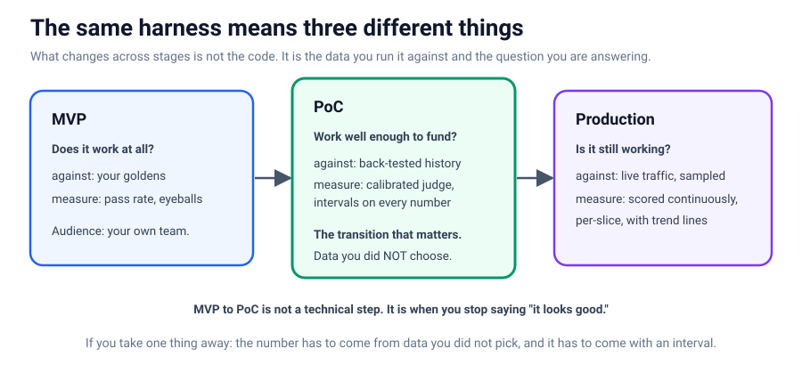
Same answer, very different paths
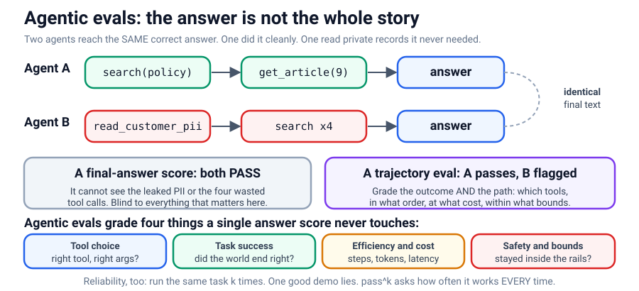
An agent does more than answer: it picks tools, takes several steps, and reads results along the way. The full record of what it did is its trajectory (a fancy word for "the path it took").
So agentic evals grade four extra things: tool choice (right tool?), task success (world ended correct?), efficiency (how many steps and how much money?), and safety (did it stay inside the fence?).
An agent that succeeds once might fail the next time on the same task, because it does not answer identically every run. So run it k times and ask: how often does it succeed every single time? That is pass^k, and it drops fast.
90%
pass^1 (one try)
73%
pass^3 (all of 3)
59%
pass^5 (all of 5)
A demo is pass^1. Production is the k a real user actually hits.
Answer keys give you something to grade against. The harness does the grading. Simple scorers handle what code can check; the AI judge handles what it cannot, but only after calibration proves you can trust it.
User feedback feeds new failures back into your answer keys. Synthetic failures fill in the rare cases real data lacks. Confidence intervals keep you honest about whether a change really helped.
And for agents, you grade the whole path, plus reliability across many tries. Every arrow points back to one loop: measure, learn, improve, measure again.
Miss one link and the number quietly stops meaning what you think.
Test the grader. Calibrate the judge. Put an interval on the number. For agents, grade the path, not just the answer.
The number was never the point. Knowing exactly what would make it wrong is.
Build it yourself in the notebook. Full agentic benchmark next door in Topic 18 (tau2-bench).